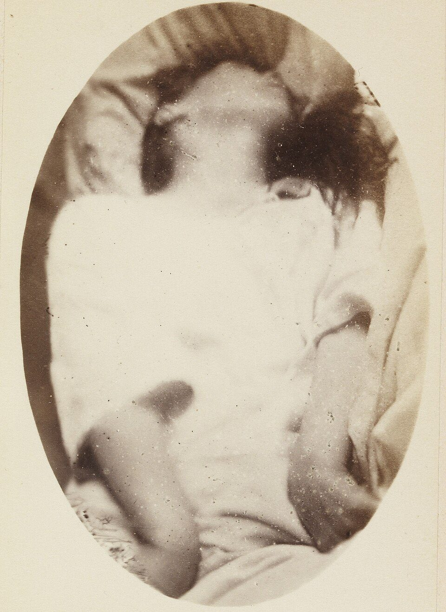

General information only. It does not replace advice from a health professional. For sudden neurological symptoms, call emergency services.


During a convulsive seizure
Most epileptic seizures stop on their own within 1 to 3 minutes. What matters is to keep the person safe until it ends. Remember three words: calm, protect, on their side.
- Stay calm and stay with the person.
- Check the time: how long the seizure lasts is the most important information.
- Move away objects they could hit and, if you can, put something soft under their head (a jacket).
- Loosen tight clothing around the neck and remove their glasses.
- Do not hold them down or try to stop the jerking.
- Do not put anything in their mouth: not your fingers, objects or water. They will not "swallow their tongue", and you could hurt them or get bitten.
- If possible, film it on your phone: it will help their neurologist a great deal.
When the jerking stops
- Turn them on their side (recovery position), so they can breathe easily and saliva or vomit can drain.
- Check that they are breathing.
- Stay with them until they recover. It is normal for them to be confused, drowsy or to have a headache for minutes or hours.
- Talk to them calmly, explain what happened and do not give them food or drink until they are fully awake.
Call 112 (or your local emergency number) if
- The seizure lasts more than 5 minutes.
- They have another seizure without recovering from the first.
- They do not regain consciousness or have difficulty breathing.
- They have been injured, the seizure happened in water or they are pregnant.
- It is their first seizure, or they have diabetes, a high fever or another illness.
If the person has an emergency plan with buccal midazolam or rectal diazepam prescribed by their doctor, trained relatives or carers can give it as instructed, usually at 5 minutes.
Other types of seizure
- In a focal seizure with loss of awareness, the person may stare blankly, make automatic movements or wander aimlessly. Do not restrain them: gently guide them away from danger (roads, stairs, water) and wait for them to recover.
- In an absence (a few seconds of blankness) nothing needs to be done, other than checking they are somewhere safe.
A seizure or a faint
During fainting there can also be a few brief jerks, but the person recovers within seconds once lying down. If in doubt, follow the same steps.
Myths to get rid of
- Do not put an object between their teeth.
- Do not give water or medicines by mouth during the seizure.
- Do not splash water on their face or try to "wake them up".
- It is not contagious.
Sources
- Epilepsy Foundation. Seizure first aid.
- International League Against Epilepsy (ILAE). Seizure first aid recommendations.
- Spanish Society of Neurology. What to do during an epileptic seizure (in Spanish).
- Glauser T, et al. Evidence-based guideline: treatment of convulsive status epilepticus. Epilepsy Curr. 2016;16:48-61.